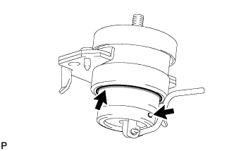
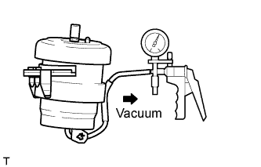

ACTIVE CONTROL ENGINE MOUNT > INSPECTION |
| 1. INSPECT FRONT ENGINE MOUNTING INSULATOR |
 |
Visually check the front engine mounting insulator for leaks.
If the fluid leaks, replace the front engine mounting insulator.
| 2. INSPECT FRONT ENGINE MOUNTING INSULATOR |
 |
Connect a vacuum pump to the engine mount insulator.
Using the vacuum pump, apply a vacuum of 80 kPa (600 mmHg. 25 in.Hg) and wait for 1 minute.
Check that there is no change in the needle movement of the vacuum pump gauge.
If the result is not as specified, replace the front engine mounting insulator.